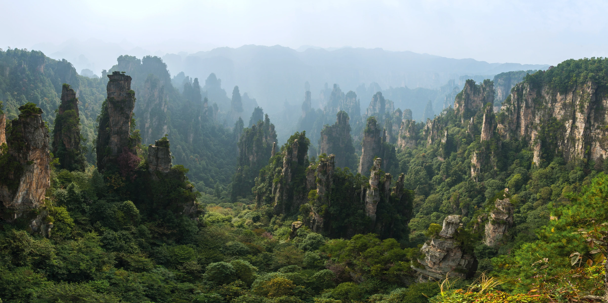

<!doctype html>
<html lang="zh-CN">
<meta charset="utf-8"><meta name="viewport" content="width=device-width,initial-scale=1">
<title>TripWonder · 山谷来信</title>
<link rel="stylesheet" href="demo.css">
<main>
<header><a href="../../index.html">TRIPWONDER <span>奇境实验室</span></a><span>PHOTO EXPLORATION / 01</span></header>
<section class="intro"><div><p class="eyebrow">一张照片，一次微旅行</p><h1>风从山谷来。</h1><p>走近画面，寻找藏在山间的三个线索。</p></div><div class="modes" aria-label="显示模式"><button id="flat" aria-pressed="false">原图</button><button id="spatial" aria-pressed="true">空间探索</button></div></section>
<section class="stage" id="stage" tabindex="0" aria-label="山谷探索画面，拖动或使用方向键改变视角">

<canvas id="view" aria-hidden="true"></canvas><div class="shade"></div>
<div class="scene-top"><span>未知目的地 · 观察中</span><span id="count" aria-live="polite">已发现 0 / 3</span></div>
<div id="hotspots"></div>
<div class="scene-bottom"><span id="gesture">拖动画面 · 方向键观察 · 点击光点收集线索</span><button id="reset">视角复位 ↺</button></div>
<div id="loading" role="status">正在准备高清画面…</div>
</section>
<section class="desk"><div class="controls"><label for="strength">空间纵深 <output id="amount">适中</output></label><input id="strength" type="range" min="0" max="100" value="55"><label class="check"><input type="checkbox" id="motion"> 轻缓巡游</label></div><div class="notebook"><p class="eyebrow">探索手记</p><p id="note" aria-live="polite">从一座石峰开始，试着读懂这片风景。</p><div id="choices" hidden><button data-answer="桂林">桂林</button><button data-answer="张家界">张家界</button><button data-answer="黄山">黄山</button></div><button id="guess">猜一猜这里是哪里 →</button></div></section>
<footer><span>空间效果原型 · 单张实景照片 + 人工近似深度 · 非完整 3D / 360° 全景</span><details><summary>照片来源与画质</summary><p>天子山，张家界。摄影：chensiyuan / Wikimedia Commons。<a href="https://commons.wikimedia.org/wiki/File:1_tianzishan_wulingyuan_zhangjiajie_2012.jpg">来源</a> · <a href="https://creativecommons.org/licenses/by-sa/4.0/">CC BY-SA 4.0</a>。本演示的照片视觉衍生效果沿用 CC BY-SA 4.0。源图 8841 × 4415；优先加载完整尺寸，显卡纹理上限不足时使用现有 2400px 展示图。深度为手工近似，未添加真实场景以外的景物。</p><p id="quality"></p></details></footer>
</main><script src="demo.js"></script>
</html>
